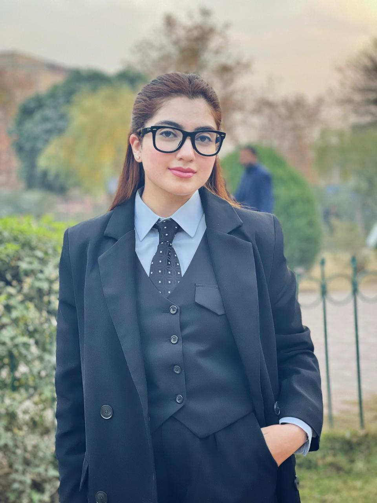

Hi, I am Amna!
I am an AI Researcher working on interpretability for AI safety. I like studying how AI models work internally and want to make it safe for humans.
Lately, I find myself thinking about the problem of scalability in interpretability. We need interpretability, but at a faster pace to compete with current development in AI. If this is what you work on, I would love to have a chat and collaborate!
I am applying to PhD programs for Fall 2027. Please feel free to reach out via email.

XAI4Science Workshop at AAAI 2026 · First author
AI4Good Workshop at NeurIPS 2026 · First author
NEmo Workshop at NeurIPS 2026 · Co-author
AI4Good and AISciK Workshops at NeurIPS 2026 · Co-author
Under review · Co-author
Lead mechanistic interpretability research on Diffusion Transformers using causal ablations, activation interventions, probing, and attention and MLP analysis, which led to the first-author paper Diffusion Transformers Use Sink Registers. Also led a second direction on concept suppression in DiTs with steering vectors.
Worked with Jobst Heitzig on whether LLMs can construct executable formal world models for safe-by-design AI agents, developing and evaluating LLM-generated stochastic-game and partially observable stochastic-game representations.
Supported two research teams studying conflicting information in LLMs and AI preference drift during training, helping with technical and coordination blockers.
Investigated whether linear refusal probes capture genuine model representations or superficial prompt features.
Built a generative-AI platform that lets fashion businesses automate ad creation, with content moderation and campaign management. Code
Trustworthy AI for Good (AI4GOOD) and World Models in Physical AI (WM-PAI).
Founded and lead a 700+ member undergraduate research community spanning computer science, AI, mathematics, and physics. Run the AI safety group's paper readings, technical discussions, and workshops to build AI safety research capacity in Pakistan.